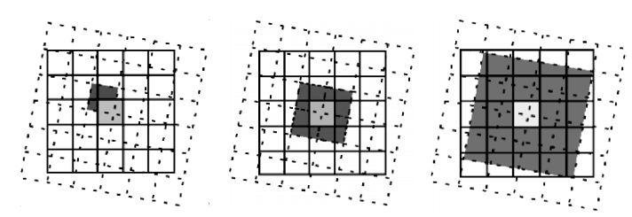
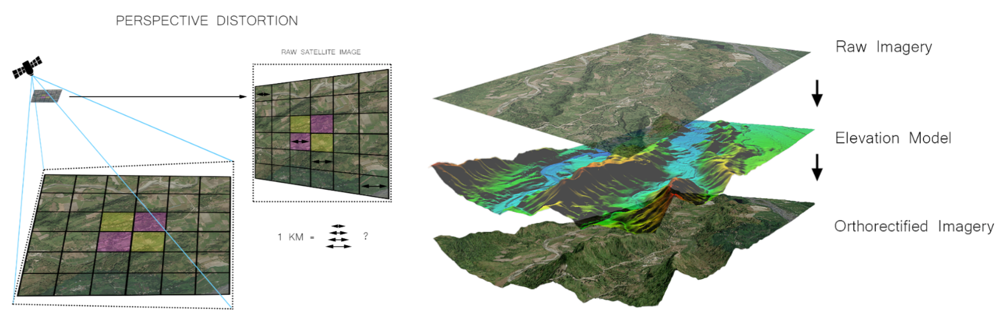
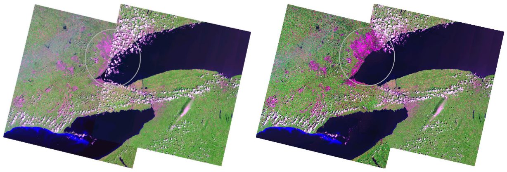
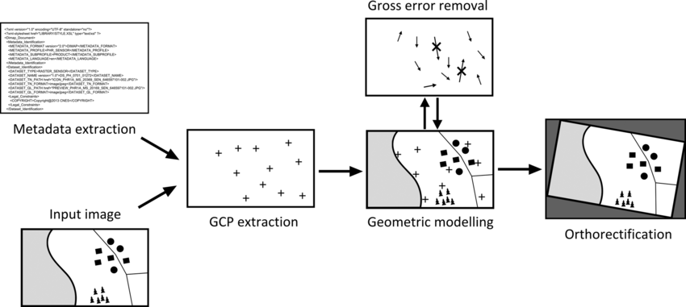
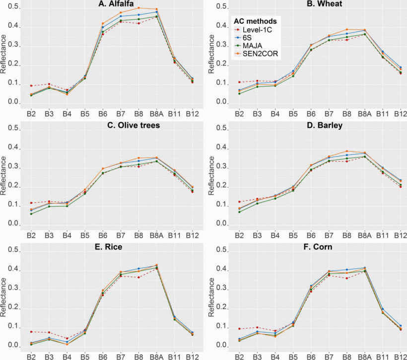

3. Corrections
This is a learning diary for week 3.
Let’s find out how to get a better image from remotely sensed data 🛰️
3.1 Summary
3.1.1 Why does image distortion occur?
- Sensor orientation (e.g. shadows depend on satellite angle)
- Topographical variation (e.g. hills, mountains)
- Wind (if it is taken by a plane)
- Rotation of the earth (from satellite)
- Curvature of the earth
- Atmospheric particles (absorption and scattering create the haze)
So, we need to correct for inaccuracies of images!
3.1.2 Types of Correction
3.1.2.1 Geometric correction
- Use GCP(Ground Control Point): match known points in the image and a reference dataset
- Resampling (e.g. Nearest Neighbor, Linear, Cubic, Cubic spline)
- Corrected Image(black line), Original Image(dotted line)

3.1.2.2 Atmospheric correction
| Types | Details |
| Dark object subtraction(DOS) | Find the brightest value based on the darkest value (assuming distortion was caused by air because air reflects light) |
| Psuedo-invariant Features (PIFs) | Adjust the brightness pixels using regression |
| Py6s | Second Simulation of the Satellite Signal in the Solar Spectrum(6S), which can now be used through python |
| Empirical Line Correction | Path radiance, Atmospheric attenuation |
3.1.2.3 Orthorectification/Topographic correction
- Sensor geometry and an elevation model are necessary to use orthorectification correction.
- It is important to use terrain data with high resolution and accuracy.
- Use Cosine correction with solar azimuth and the angle of local zenith.

Source : Setyawan (n.d.)
3.1.2.4 Radiometric calibration
- Captures image brightness and assigns a Digital Number(DN)
- Compare DN with spectral radiance = Radiometric calibration
[Remote Sensing Jargon] 1. Energy
When the sun’s radiant energy 🌞 passes through the Earth’s atmosphere ☷ and touches the surface of an object 🪨,
- Radiance
The amount of energy radiated from the object’s surface.
Also includes the amount of energy from the surroundings + the amount of radiation reflected from the clouds above the surface.
- Irradiance
- The amount of energy entering the surface of an object.
[Remote Sensing Jargon] 2. Influencing factors
Along the way from the SUN 🌞 to the sensor 🛰,
- Digital Number
- The intensity of the electromagnetic radiation per pixel.
- Pixel values aren’t calibrated and have no unit.
- Therefore, it is necessary to convert to ‘radiance’ or ‘reflectance’.
- Radiance
- Refer to the explanation above.
- Reflectance
- The ratio of radiation reflected on the surface.
- The object can be detected by correcting them with reflectivity values (since specific objects can be determined as reflectivity values).
- 4 types of reflectance : TOA(Top of Atmosphere), Surface, Hemispherical, Apparent
3.1.3 Joining data sets = Mosaicking
- It feathers the images together and creates a seamless mosaic or image(s)! (Look at the circle)

3.1.4 Image Enhancement
- Imagery can be “improved/enhanced” based on the energy reflected and the contrast between features.
- There are many types of image enhancement
Piecewise Linear Contrast Stretch
Ratio: Band ratioing, Normalized Burn Ratio
Filtering: Using pixels
PCA: Transform multi-spectral data into uncorrelated and smaller dataset
Texture : use tonal(spectral) data, not texture(spatial variation of gray values)
Fusion : where data from multiple sensors / sources is fused together
3.2 Application
- Remote sensing products are now Analysis Ready Data(ARD)! = Corrected data

3.2.1 In a study
In the study by Sola, Álvarez-Mozos, and González-Audícana (2018), it illustrates three atmospheric calibration methods tested using Sentinel-2 images: 6S, MAJA and SEN2COR.
The study area is the southern part of Navarre region of Spain, which is an agricultural area.

6S is an open-source AC tool and Py6S is used in this work.
The land cover and the atmospheric conditions affect the varying performance of the methods. Therefore, it is a key point to select an adequate method when in the pre-processing of Sentinel-2.
3.2.2 In practice
According to the ‘Regulations for aerial photographic surveying’ notice of the National Geographic Information Institute in South Korea, there are articles related to aerial photography and correction to get aerial photos with clear resolution.
Monitoring the changes in the national territory with a corrected photo/image is possible.
Take aerial photography by dividing the country into urban areas (12cm resolution, 1-year cycle) and general regions (25cm resolution, 2-year cycle).
After orthogonal processing and colour correction, produce user-specific (civilian and military) orthographic images nationwide.

Source : “National Geographic Information Institute- Orthogonal Imagery DB” (n.d.)
3.3 Reflection
I thought that remote sensing data was available to utilise as soon as it was taken by satellite. But, I found that removing the climate effects through various pre-processing (calibration) methods is necessary to obtain a clear image. Moreover, it was amazing that a lot of research and effort accompanied this until it became possible.
Recently, remote sensing data has become public data that governments use officially, and public organisations usually provide it. So it is essential to consider whether it is appropriately pre-processed and suitable for use before analysing the data.
Besides that, section 3.2.2 shows that the latest technology is not always suitable for all studies. Instead, applying the most suitable method according to the research purpose is important.